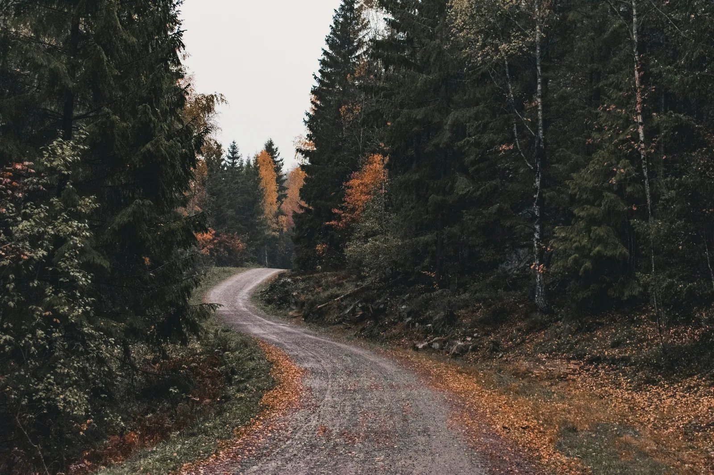

Take tram line 11 to the end of the line at Kjelsås, and you're a short ride from the forest. From there the Maridalen valley opens straight into the Nordmarka — no traffic, no wrong turns, no working out a route through the city. It's the most direct way into Oslo's forest that most visitors never hear about.
Kjelsås is the northern terminus of tram line 11 (line 12 also runs there). It leaves from the city centre, threads up through Majorstuen and Storo, and about 25 minutes later drops you at the end of the line. You step off, and the city is already behind you — you're at the edge of the countryside.
This is the quiet advantage of Oslo: the public transport reaches the forest's doorstep. No car, no bike ride through downtown traffic to get out of town. The tram carries you and, outside rush hour, your bike too — check Ruter's current rules, a separate bike ticket applies.
From Kjelsås it's a short roll to the entrance of Maridalen — a protected valley of old farmland and forest wrapped around Maridalsvannet, Oslo's largest lake and its main source of drinking water. Within minutes you're on unpaved, car-free forest roads with the lake on one side and the trees closing in on the other.
The classic outing is the loop around Maridalsvannet: roughly 13 kilometres, mostly flat, almost entirely car-free, and rideable by anyone. Along the way you pass old farms, the ruins of the medieval Margaretakirken church, and long open views across the water to the forest ridges beyond. It's one of the most rewarding easy rides anywhere near a European capital.
About ten minutes in, there's a spot worth stopping for — a lovely little viewpoint with benches looking straight out over Maridalsvannet. It's the perfect place to pause, take in the water and the forest ridges, and enjoy the view before carrying on around the lake.
Maridalen is also a gateway. From the north end of the lake, gravel roads climb into the Nordmarka proper — 1,700 square kilometres of pine, birch, remote lakes and cabins serving coffee and waffles. You can turn a gentle lake loop into a full day in the wilderness simply by carrying on up the valley.
Here's what makes this genuinely effortless: you don't have to bring a bike across the city on the tram. We offer bike rental with pickup at Kjelsås — take the tram out, collect a properly set-up gravel bike or e-bike at the end of the line, and ride straight into Maridalen and the forest. No city navigation, no logistics.
Prefer a guide? Our forest tours cover the Nordmarka in more depth — from a gentle two-hour taste on the Oslo Gravel Short to the full Ring 4 loop. And if you'd rather explore the whole area yourself, our guide to getting to Sognsvann covers the other main forest gateway at the end of metro line 5.
Take the tram to the end of the line, collect your bike, and you're in Maridalen and the Nordmarka within minutes — no city, no traffic, no navigation.
Bike rental in OsloTake tram line 11 (also line 12) north to its final stop, Kjelsås. It runs from the city centre via Majorstuen and Storo, and the ride takes around 25 minutes. Kjelsås is also served by a local train on the Gjøvik line.
From the Kjelsås tram terminus it is a short ride to the forest entry at Maridalen. Within minutes you are on car-free gravel roads beside Maridalsvannet, Oslo's largest lake, with the Nordmarka forest opening out ahead — no city traffic to navigate.
Maridalen is a protected valley of historic farmland and forest wrapped around Maridalsvannet. The classic outing is the roughly 13 km loop around the lake on mostly unpaved, car-free forest roads — flat, scenic and suitable for all levels. From there, gravel roads climb deeper into the Nordmarka.
Yes. Oslo Bike Tours offers bike rental with pickup at Kjelsås, the end of tram line 11. You take the tram out, collect the bike, and ride straight into Maridalen and the forest — the most direct way to reach the Nordmarka without cycling through the city.